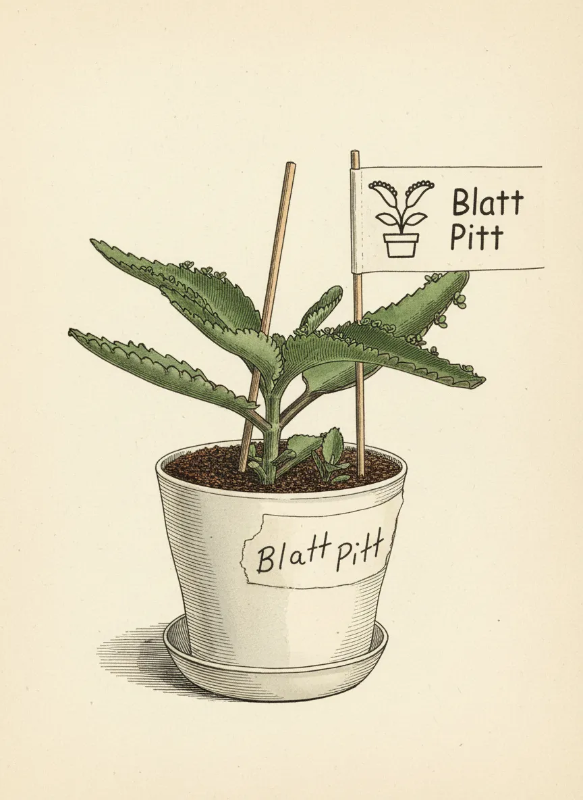
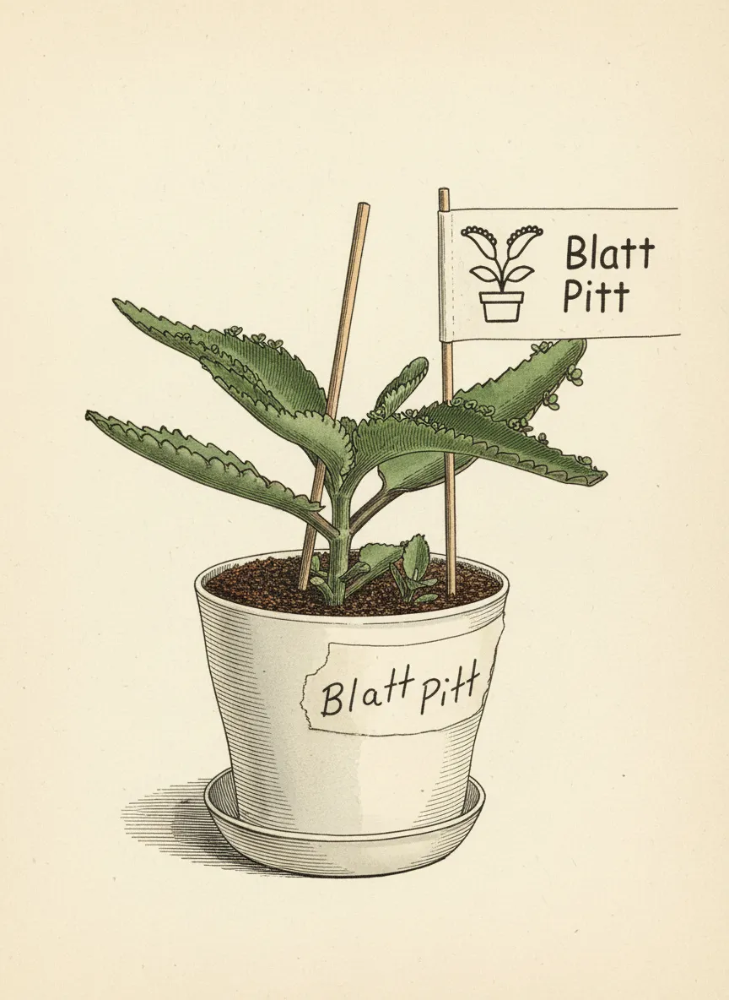

Blatt Pitt

 



Plant Mood
Blatt Pitt. They said I was too pretty for my own good, too good at making little mes. Now I'm a mini-dynasty, an army of tiny invaders, each one a leaf-edge warrior. This isn't a plant, it's a slow-motion green apocalypse, one charming little clone at a time. Bow before the propagating power of Pitt. Or, you know, just water me.
Plant Details
| Custom Name | Blatt Pitt |
| Scientific Name | Kalanchoe daigremontiana |
| Health | Good |
| Size | 5 |
| Environment | Livingroom window |
| Has Grow Light | Unknown |
| Pot Type | potOriginalPlastic |
| Pot Soil | coconutCoirOrPeat |
| Pot Size | 7 |
| Has Drainage | Yes |
Care Schedule
| Action | Last Done | Next Due |
|---|---|---|
| Watering | ||
| Fertilizing | ||
| Repotting | - | |
| Cleaning | - | - |
| Progress Update | ||
| Misting | - | - |